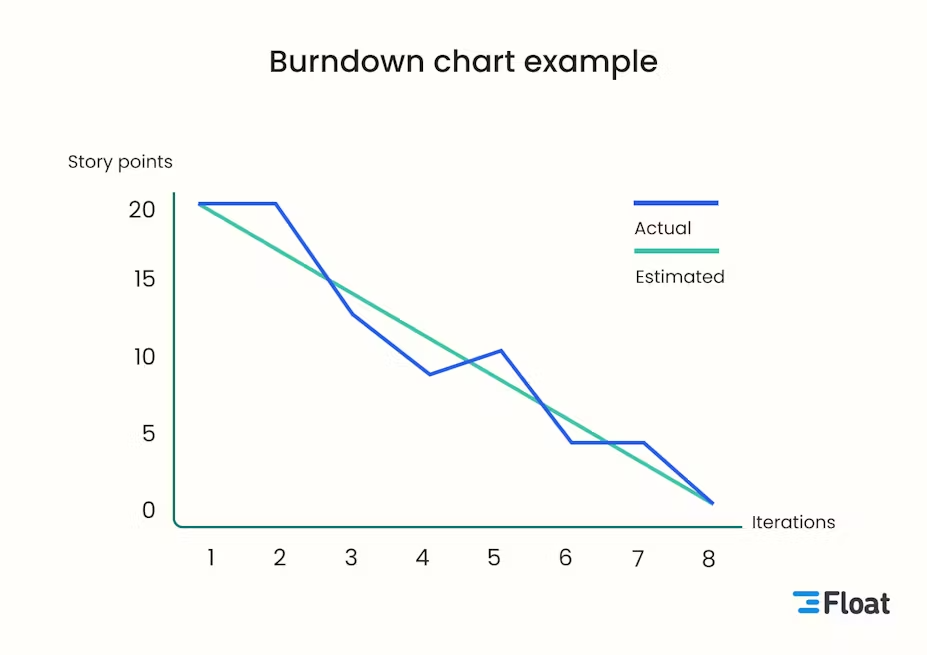

LES ARTEFACTS DANS SCRUM
Dans Scrum, les artefacts sont les outils qui permettent à l'équipe de visualiser, organiser et suivre l'avancement du travail. Ils assurent la transparence et facilitent la collaboration entre les membres. Les trois artefacts principaux présentés ici sont le Product Backlog, le Sprint Backlog et le Burndown Chart.
LES 3 ARTEFACTS PRINCIPAUX
-
PRODUCT BACKLOG
Le Product Backlog est la liste de tout ce qui doit être fait pour le produit. Il contient des fonctionnalités, des tâches techniques, et parfois des spikes pour explorer une idée technique. On y trouve aussi des epics (grandes fonctionnalités) et des user stories plus simples, réalisables dans un sprint.

-
SPRINT BACKLOG
Le Sprint Backlog est un extrait du Product Backlog, composé des éléments que l’équipe a choisis pour le sprint en cours. Il évolue selon ce que l’équipe découvre au fil du sprint, et permet de suivre le travail jour après jour.
-
BURNDOWN CHART
le Burndown Chart est un graphique qui montre la quantité de travail restante. Il aide à visualiser si l’équipe progresse au bon rythme et si les objectifs du sprint sont atteignables dans les temps.

NOTIONS IMPORTANTES
-
EPIC
Une epic est une user story de grande taille, trop complexe pour être développée en un seul sprint. Elle est donc découpée en plusieurs user stories plus petites et plus gérables. Les epics permettent de structurer le backlog autour de grandes fonctionnalités ou thèmes.
-
SPIKE
Un spike, quant à lui, est une tâche de recherche ou d'exploration réalisée lorsque l'équipe ne sait pas encore comment développer une fonctionnalité. Le but d'un spike est de réduire l'incertitude technique ou fonctionnelle avant de commencer le développement effectif.
-
USER STORY
En Scrum, une user story est une description simple d'une fonctionnalité du point de vue de l'utilisateur. Elle suit souvent le format : « En tant que [utilisateur], je veux [objectif] afin de [bénéfice] ». Les user stories permettent de mieux comprendre les besoins métier et servent de base aux discussions entre l'équipe et le Product Owner.
ACCEDEZ A LA PAGE FAQ SCRUMZY EN CLIQUANT ICI